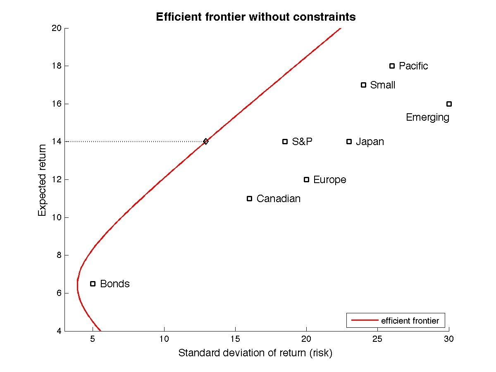
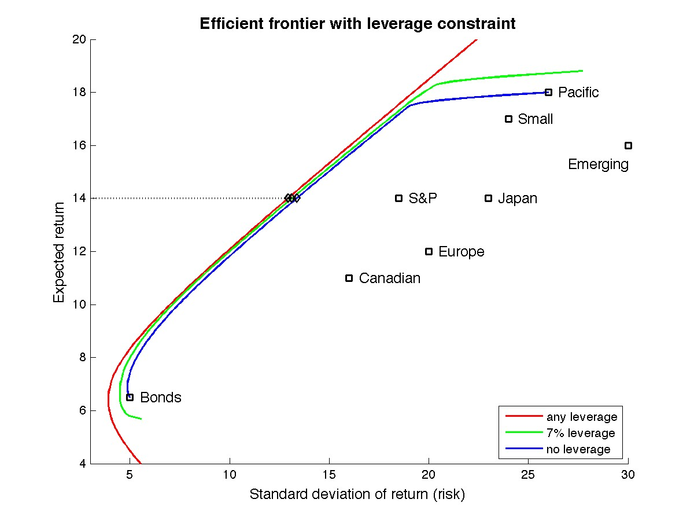
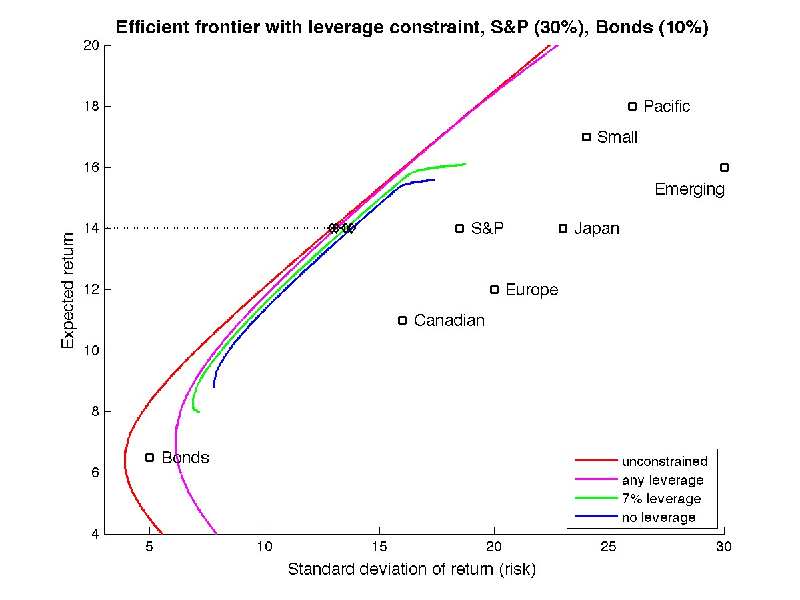

The Efficient Frontier in Constrained Portfolios
A fundamental concept in portfolio optimization is that of the Efficient Frontier, which is the set of all portfolios that minimize a measure of risk while guaranteeing a certain level of return. By far the most studied and well understood case is that of minimum variance portfolios, which dates back to Markowitz [1952]. When no constraints on the expected return or the variance of the expected return of groups or the total number of assets is present, the determination of the optimum portfolios can be done through an analytic formula, a fact that facilitates the development and discussion of its many properties.
The case when constraints on groups of assets is present is much less understood, mainly because no analytic formula for the optimum portfolio can be derived. The following discussion is meant to illustrate the beneficial role that can be played by such constraints in portfolio optimization. It does not contain proofs and the technical aspects of the problems been solved are omitted.
In a nutshell, the message is that while unconstrained portfolios are easier to compute, they will more than often rely heavily on leverage to finance its holdings. The introduction of additional constraints, although complicating the optimization problem to be solved, can effectively control that level of leverage and help shape the desired portfolio without significantly increasing the associated level of risk.
The Efficient Frontier
We keep this discussion simple by adopting the variance of expected returns a measure of risk of the portfolio. See Markowitz [1952] or, for instance, Elton and Gruber [1995] for a more modern presentation.
Given a set of assets, their expected returns and the complete covariance matrix, an optimum portfolio is therefore one that minimizes the portfolio variance while guaranteeing a certain rate of expected return. As stated, one can cast such portfolio optimization problem as a convex quadratic program (Boyd and Vandenberghe [2004]). In its simplest version, without constraints, an analytic formula can be obtained for the computation of the optimum portfolio (Elton and Gruber [1995]).
In order to illustrate optimum portfolios under a variety of constraints we will use the fictitious data from Elton and Gruber [1995], Chapter 6, p 106. It consists of a small portfolio with 8 classes of segmented global assets. The expected returns and standard deviation of the return of such assets are given in the following table:
| S & P | Bonds | Canadian | Japan | Emerging Markets | Pacific | Europe | Small Stocks | |
|---|---|---|---|---|---|---|---|---|
| Expected return | 14.0 | 6.5 | 11.0 | 14.0 | 16.0 | 18.0 | 12.0 | 17.0 |
| Standard deviation | 18.5 | 5.0 | 16.0 | 23.0 | 30.0 | 26.0 | 20.0 | 24.0 |
The correlation coefficients which can be used to assemble the complete covariance matrix can be found in Elton and Gruber [1995] or by clicking here. With this information in hand one can trace the efficient frontier by varying the expected return to obtain the plot in the next figure:
The figure displays only a segment of the efficient frontier, the red solid curve, along with all assets and their respective return and standards deviations. It is clear that the main advantage of portfolio optimization, which selects assets on the efficient frontier, is to provide a significant reduction in risk at any level of return. This feature comes however loaded with some caveats. In the next sections we will discuss how some of these caveats can be mitigated by improving the quality of the underlying model with the introduction of additional constraints.
We now enlist two caveats. First, optimum portfolios in the unconstrained frontier can be very sensitive to the quality of the model, here specially the accuracy[1] of the covariance matrix. Second, under the absence of other constraints, the efficient frontier extends ad infinitum, and one could theoretically extract any level of return from this portfolio, often at the expense of much leveraging. For instance, pick a given level of return, say 14%, which is the expected return of the S&P assets, and take a closer look at its associated optimum portfolio weights:
| S&P | Bonds | Canadian | Japan | Emerging | Pacific | Europe | Small | Standard deviation | Leverage | |
|---|---|---|---|---|---|---|---|---|---|---|
| (%) | 5.3 | 36.9 | -3.6 | 6.9 | -12.0 | 33.7 | -11.5 | 44.2 | 12.9 | 27.1 |
The above weights are associated with the optimum portfolio shown in the figure above on the efficient frontier at the level of 14% return.
The optimum portfolio provides the same return as the S&P assets (14%) at a much lower risk (12.9% compared with 18.5%). Note however that this is accomplished by short selling Canadian, Emerging Markets and Europe, at a total level of leveraging[2] of 27.1%. Higher levels of return would generate even greater number of short sales. Indeed, in this example, that is the mechanism by which the optimum portfolios can provide returns superior to 18% at risk levels less than 26%, the marks which one would obtain by holding only Pacific.
With that in mind, it is natural to try to incorporate into the portfolio optimization procedure some type of constraint on the level of leveraging. One can do that individually, per asset, or globally. In the next section we adopt the latter type of constraint on the global level of leveraging.
Limiting Leverage
Contrary to what happens in the case of an unconstrained portfolio, where the efficient frontier had an analytic expression that could be readily computed, the introduction of a constraint on leveraging leaves one with the task of computing the optimum portfolios by using numerical methods. This extra complication is however compensated by a more insightful efficient frontier. For example, in the next figure we have computed the efficient frontier subject to two levels of constraints on maximum leveraging:
The solid green curve is the efficient frontier when the total leveraging is constrained to be at most 7%. The solid blue curve is the efficient frontier when no short sales are allowed. Note that as a result of these constraints, the efficient frontier has now shifted and is now a finite curve segment in both cases. In particular, when no leveraging is permitted one is faced at the extremes with a choice of holding either Bonds, for minimum return, or Pacific, for maximum return.
Note also that the three curves have no point in common. This means that no optimum portfolio on the solid red efficient frontier has a level of leverage below 7%. Yet, as the figure illustrates, optimum portfolios with very similar risk and return exist throughout most of the interesting range of returns, in this case between 8% and 17%, which have leveraging levels of 7% and even with no leveraging at all! Again to make a point about a specific return level, consider 14%. The three optimum portfolios indicated in the above figure correspond to the weights:
| S&P | Bonds | Canadian | Japan | Emerging | Pacific | Europe | Small | Standard deviation | Leverage | |
|---|---|---|---|---|---|---|---|---|---|---|
| (%) | 5.3 | 36.9 | -3.6 | 6.9 | -12.0 | 33.7 | -11.5 | 44.2 | 12.9 | 27.1 |
| — | 31.5 | — | 3.1 | -7.0 | 32.5 | — | 39.9 | 13.1 | 7.0 | |
| — | 30.9 | — | 2.7 | — | 32.1 | — | 34.4 | 13.4 | — |
Note the negligible impact in the standard deviations of these optimum portfolios, that is their aggregate risk, as compared with the very large variation in the required level of borrowing required to holding these portfolios.
This may be the most significant advantage of improving the quality of the underlying model by incorporating in the portfolio optimization procedure operational and strategic constraints, rather than trying to adapt an optimal solution obtained in the unconstrained case to fit practical realities.
Constraints on Selected Positions
In the presence of additional constraints the efficient frontier will shift further. In this section we consider constraints on minimum positions on certain assets. For instance, let us look for optimum portfolios in which at least 30% of the total investment is in S&P and at least 10% is in Bonds. The efficient frontier is now computed and displayed in the next figure under arbitrary leverage (solid magenta), 7% (solid green) or no leverage (solid blue) constraints. For reference the fully unconstrained efficient frontier is also shown in solid red.
Note how enforcing minimum positions in S&P and Bonds significantly reduce the range of returns available at the efficient frontier, specially when combined with leverage constraints (blue and green curves). Yet, just as before, in the case of leverage constraints alone, optimum portfolios are available that are very close to the original unconstrained efficient frontier in most of the feasible range. Once again, consider the return level of 14%. Four optimum portfolios in each of the efficient frontiers depicted above are shown in the next table.
| S&P | Bonds | Canadian | Japan | Emerging | Pacific | Europe | Small | Standard deviation | Leverage | |
|---|---|---|---|---|---|---|---|---|---|---|
| (%) | 5.3 | 36.9 | -3.6 | 6.9 | -12.0 | 33.7 | -11.5 | 44.2 | 12.9 | 27.1 |
| 30.0 | 34.8 | -8.7 | 10.0 | -9.8 | 30.8 | -18.5 | 31.4 | 13.1 | 37.0 | |
| 30.0 | 23.2 | — | 6.2 | -2.6 | 27.4 | -4.4 | 20.2 | 13.5 | 7.0 | |
| 30.0 | 21.2 | — | 4.7 | — | 26.8 | — | 17.3 | 13.8 | — |
One more time, the increased risk (standard deviation of the return) is insignificant if compared with the variation in the amount of short sales as we enforce leverage constraints jointly with minimum positions on S&P and Bonds. Note that for the 14% return level the 30% minimum in S&P is active (that means satisfied at the required minimum) on all three optimum portfolios whereas the optimal withholding of Bonds is always greater than the required minimum. At higher levels of return the 15% constraint on Bonds becomes active as well.
It might come as a surprise to some to observe that the optimum portfolio obtained with no constraint on leveraging but where the minimum holdings on S&P and Bonds are enforced actually (solid magenta) produces the highest number of short sales, raising the required overall leveraging by almost 40% (from 27.1% to 37.0%). The conclusion is once again that one should incorporate as many practical constraints as possible on the underlying portfolio model in order to obtain reasonable and meaningful portfolios.
References
-
Harry M. Markowitz, “Portfolio Selection”. Journal of
Finance,
7 (1): 77 - 91, 1952. - Edwin J. Elton and Martin J. Gruber, Modern Portfolio Theory and Investment Analysis. Fifth Edition, John Wiley and Sons, 1995.
- Stephen P. Boyd and Lieven Vandenberghe, Convex Optimization. Cambridge University Press, 2004.
Notes
- One might argue that it may be very difficult to obtain such information without bearing a significant degree of uncertainty.
- In this discussion we are not assuming a particular riskless source of lending and borrowing that could finance the leveraging. Once the efficient frontier has been determined then one can use standard techniques (see, for instance Elton and Gruber [1995]) in order to determine the optimum level of return one should expect in the presence of a particular rate. In our particular example, the optimum return of 14% is associated with a riskless lending and borrowing rate of approximately 5%.
Mauricio de Oliveira
Copyright © 2009 VICBee Consulting